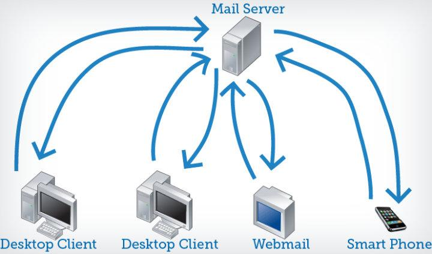

Какво е IMAP?
IMAP(Internet Message Access Protocol) е стандартен протокол за извличане на поштенски съобщения. Той съхранява поштенските съобщения на пощенски сървър и позволява на получателя да ги преглежда и манипулира, сякаш са съхранявани локално на устройството. Той позволява на потребителите да организират съобщенията в папки, да маркират съобщения за спешност или последващи действия и да запазват чернови на съобщения на сървъра. Потребителите могат също да имат множество приложения за имейл клиент, които се синхронизират с имейл сървъра, за да показват последователно кои съобщения са прочетени или все още непрочетени.
Той следва модела клиент/сървър. От една страна имаме IMAP клиент, който е процес, изпълняван на устройство(пр. компютър). От другата страна имаме IMAP сървър, който също е процес, който се изпълнява на сървър. И устройството и сървъра са свързани чрез мрежа.